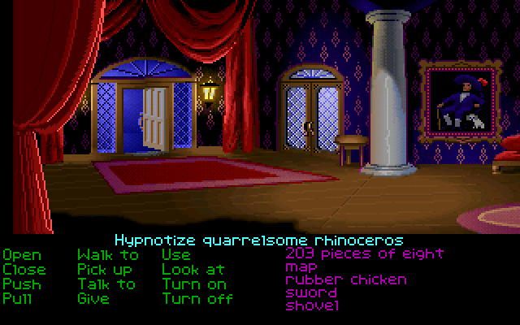
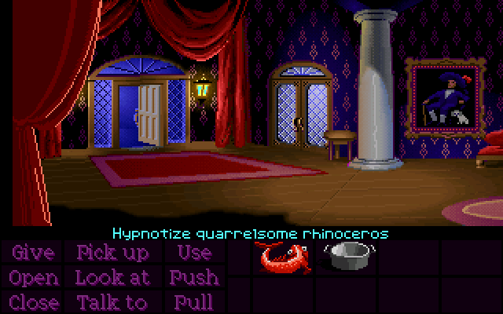
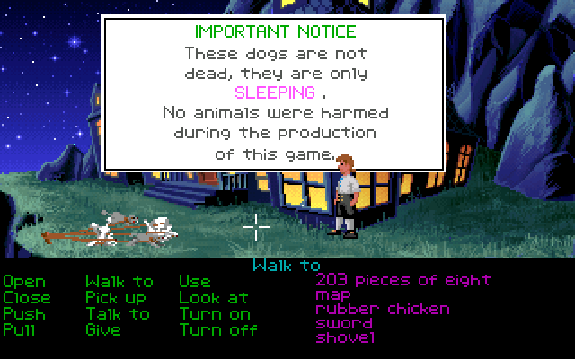
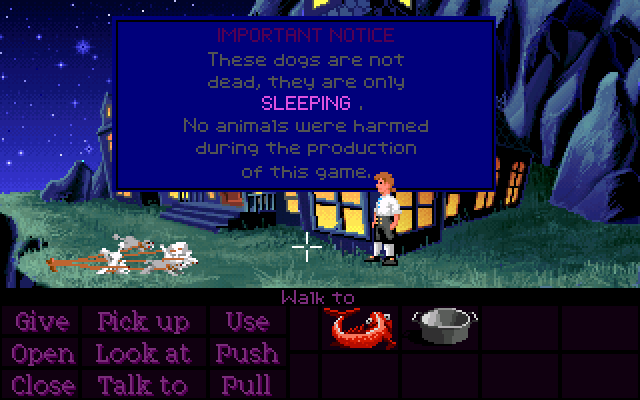
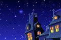
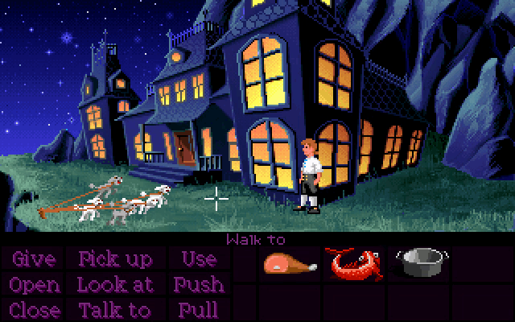

Normally, during the first of the two mansion cutscenes, Guybrush will briefly leave the chaos rooms to grab the vase before going back in, where he will then immediately break it.

However, if you take the vase before entering the chaos rooms, Guybrush will then put the vase back during the cutscene instead. After the cutscene ends, you can pick it back up again, and now it's yours forever (well, until it gets taken away at the beginning of Part 2).

You can also get the vase by simply skipping the cutscene before Guybrush breaks it.
If you take the vase all the way to the bar and destroy it before starting the cutscene, the entire moment will just be skipped, making the whole cutscene about three seconds shorter.
When Shinetop catches you trying to leave with the idol, he'll say something like "Where do you think you're going, Throomwald?", but the exact name variation is randomly-generated each time!

This is the exact same system that the Lookout uses. I've written a more in-depth explanation of how this works in that section.
For the Special Edition, they chose six variations for Earl Boen to say: "Throotwink", "Threekword", "Thumpwind", "Threedwork", "Throofwood" and "Throomwald", the last one he strangely pronounces like "Throomwade".
The dog in the painting is actually Spiffy, the dog from the bar. Guybrush's description of the painting changes depending on whether or not he recognizes him. He'll either say "I don't recognize the man, but he has a great hat", or "... but that looks like the dog in the bar."


Weirdly, simply talking to Spiffy isn't enough to trigger this line - we have to actually reach a certain point within Spiffy's dialogue tree before Guybrush will recognize him in the painting.
Specifically, we have to first say either "Woof", "Arf", or "Ruff" at the first dialogue choice, and then say "Wuf, 'LeChuck?'" at the second choice. If done correctly, Spiffy will talk about "Governor Marley" and "Monkey Island", and Guybrush will now recognize him when looking at the painting.

The implication is that Spiffy used to belong to the man in the painting, who is presumably Captain Marley. Maybe he's actually a stray Piranha Poodle?
While Guybrush is in the chaos rooms, the sentence line in the CD version uses the wrong "highlight" color. Instead of turning pink when executing an action, it becomes the same cyan color used in the floppy versions.


The reason this happens is because the game isn't actually executing these sentences as commands the way it normally does - instead it's "faking" it by changing the text to a hardcoded color so that it looks like an action is being performed. The CD version uses different colors for the sentence line, but the code for these cutscenes was never updated to reflect that.
The "IMPORTANT NOTICE" that pops up after putting the dogs to sleep looks drastically different between the floppy versions and the CD version.


The green text at the top has been changed to purple due to the verb color being changed, and the white background has been changed to dark blue for reasons that aren't clear to me. The raw image for the popup box is white in every version, which means something is changing its color at runtime.
Whatever causes the white to become blue also affects many of the stars in the background.

Much like Spiffy, Guybrush can talk to the piranha poodles, which makes them respond by rapidly yipping.
